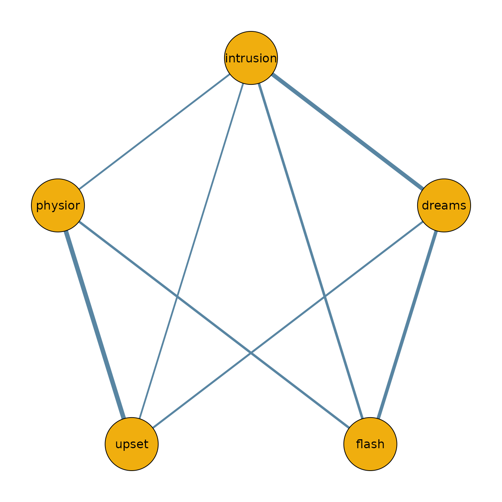

Introduction
The bgms package implements Bayesian methods for analyzing graphical models. It supports three variable types:
- ordinal (including binary) — Markov random field (MRF) models,
- Blume–Capel — ordinal MRF with a reference category,
- continuous — Gaussian graphical models (GGM).
The package estimates main effects and pairwise interactions, with optional Bayesian edge selection via spike-and-slab priors. It provides two main entry points:
-
bgm()for one-sample designs (single network), -
bgmCompare()for independent-sample designs (group comparisons).
This vignette walks through the basic workflow for ordinal data. For
continuous data, set variable_type = "continuous" in
bgm() to fit a Gaussian graphical model.
Wenchuan dataset
The dataset Wenchuan contains responses from survivors
of the 2008 Wenchuan earthquake on posttraumatic stress items. Here, we
analyze a subset of the first five items as a demonstration.
Fitting a model
The main entry point is bgm() for single-group models
and bgmCompare() for multiple-group comparisons.
fit = bgm(data, seed = 1234)Posterior summaries
summary(fit)
#> Posterior summaries from Bayesian estimation:
#>
#> Category thresholds:
#> mean mcse sd n_eff Rhat
#> intrusion (2) 0.480 0.005 0.232 2469.487 1.000
#> intrusion (3) -1.892 0.009 0.337 1320.552 1.002
#> intrusion (4) -4.822 0.018 0.545 962.378 1.003
#> intrusion (5) -9.471 0.028 0.885 993.513 1.002
#> dreams (2) -0.594 0.003 0.189 3135.713 1.001
#> dreams (3) -3.795 0.007 0.339 2446.670 1.002
#> ... (use `summary(fit)$main` to see full output)
#>
#> Pairwise interactions:
#> mean mcse sd n_eff n_eff_mixt Rhat
#> intrusion-dreams 0.315 0.001 0.033 3555.912 1.000
#> intrusion-flash 0.169 0.001 0.031 3205.798 1.000
#> intrusion-upset 0.100 0.002 0.035 314.264 244.948 1.007
#> intrusion-physior 0.093 0.003 0.039 233.375 149.899 1.052
#> dreams-flash 0.249 0.000 0.030 4190.570 1.001
#> dreams-upset 0.112 0.002 0.030 1213.966 297.702 1.031
#> ... (use `summary(fit)$pairwise` to see full output)
#> Note: NA values are suppressed in the print table. They occur here when an
#> indicator was zero across all iterations, so mcse/n_eff/n_eff_mixt/Rhat are undefined;
#> `summary(fit)$pairwise` still contains the NA values.
#>
#> Inclusion probabilities:
#> mean mcse sd n0->0 n0->1 n1->0 n1->1 n_eff_mixt
#> intrusion-dreams 1.000 0.000 0 0 0 3999
#> intrusion-flash 1.000 0.000 0 0 0 3999
#> intrusion-upset 0.958 0.019 0.201 160 9 9 3821 114.389
#> intrusion-physior 0.911 0.03 0.285 342 14 14 3629 88.242
#> dreams-flash 1.000 0.000 0 0 0 3999
#> dreams-upset 0.986 0.014 0.117 54 2 2 3941
#> Rhat
#> intrusion-dreams
#> intrusion-flash
#> intrusion-upset 1
#> intrusion-physior 1.127
#> dreams-flash
#> dreams-upset 1.304
#> ... (use `summary(fit)$indicator` to see full output)
#> Note: NA values are suppressed in the print table. They occur when an indicator
#> was constant or had fewer than 5 transitions, so n_eff_mixt is unreliable;
#> `summary(fit)$indicator` still contains all computed values.
#>
#> Use `summary(fit)$<component>` to access full results.
#> Use `extract_log_odds(fit)` for log odds ratios.
#> See the `easybgm` package for other summary and plotting tools.You can also access posterior means or inclusion probabilities directly:
coef(fit)
#> $main
#> cat (1) cat (2) cat (3) cat (4)
#> intrusion 0.4801346 -1.891782 -4.822461 -9.471156
#> dreams -0.5944712 -3.794730 -7.114985 -11.555925
#> flash -0.1056784 -2.564123 -5.360984 -9.668527
#> upset 0.4126304 -1.313944 -3.385299 -7.050747
#> physior -0.6087441 -3.153320 -6.192194 -10.527126
#>
#> $pairwise
#> intrusion dreams flash upset physior
#> intrusion 0.00000000 0.315091867 0.168970899 0.099644632 0.093461147
#> dreams 0.31509187 0.000000000 0.249224625 0.112325564 0.005904644
#> flash 0.16897090 0.249224625 0.000000000 0.003948511 0.153829023
#> upset 0.09964463 0.112325564 0.003948511 0.000000000 0.354824095
#> physior 0.09346115 0.005904644 0.153829023 0.354824095 0.000000000
#>
#> $indicator
#> intrusion dreams flash upset physior
#> intrusion 0.00000 1.000 1.0000 0.95775 0.911
#> dreams 1.00000 0.000 1.0000 0.98600 0.102
#> flash 1.00000 1.000 0.0000 0.08350 1.000
#> upset 0.95775 0.986 0.0835 0.00000 1.000
#> physior 0.91100 0.102 1.0000 1.00000 0.000Network plot
To visualize the network structure, we threshold the posterior inclusion probabilities at 0.5 and plot the resulting adjacency matrix.
library(qgraph)
median_probability_network = coef(fit)$pairwise
median_probability_network[coef(fit)$indicator < 0.5] = 0.0
qgraph(median_probability_network,
theme = "TeamFortress",
maximum = 1,
fade = FALSE,
color = c("#f0ae0e"), vsize = 10, repulsion = .9,
label.cex = 1, label.scale = "FALSE",
labels = colnames(data)
)
Continuous data (GGM)
For continuous variables, bgm() fits a Gaussian
graphical model when variable_type = "continuous". The
workflow is the same:
The pairwise effects are unstandardized partial associations derived
from the off-diagonal entries of the precision matrix (stored as
-0.5 * K_ij). They are not standardized partial
correlations. Use extract_partial_correlations() to convert
them to actual partial correlations, or extract_precision()
to obtain the precision matrix. Missing values can be imputed during
sampling with na_action = "impute".
Next steps
- For comparing groups, see
?bgmCompareor the Model Comparison vignette. - For diagnostics and convergence checks, see the Diagnostics vignette.